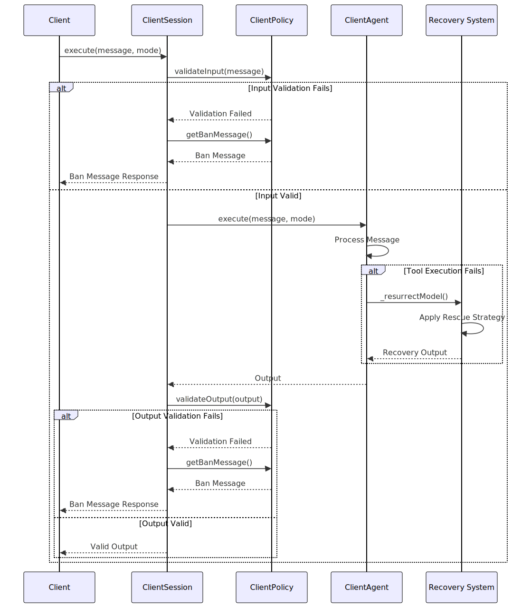

This document covers the error handling and recovery mechanisms within the agent-swarm-kit system, including tool call failures, model rescue strategies, validation errors, and system recovery patterns. It focuses on how the system maintains stability and provides graceful degradation when failures occur.
For information about general system validation, see Validation Services. For details about agent execution lifecycle, see Client Agent. For session management patterns, see Session and Chat Management.
The agent-swarm-kit system implements comprehensive error handling across multiple layers, from individual tool calls to system-wide recovery mechanisms.
Tool call errors represent one of the most common failure scenarios in the system. The ClientAgent class implements sophisticated error handling for tool execution failures.

Tool Call Error Flow in ClientAgent
The system uses specific symbols to coordinate error handling between tool execution and the main agent loop:
| Symbol | Purpose | Trigger Condition |
|---|---|---|
TOOL_ERROR_SYMBOL |
Tool execution failed | Exception during tool call execution |
MODEL_RESQUE_SYMBOL |
Model output invalid | Invalid tool calls or missing functions |
AGENT_CHANGE_SYMBOL |
Agent navigation occurred | Tool triggered agent transition |
TOOL_STOP_SYMBOL |
Tool execution stopped | Manual stop via commitStopTools |
CANCEL_OUTPUT_SYMBOL |
Output cancelled | Manual cancellation via commitCancelOutput |
When the AI model produces invalid outputs or tool calls, the system employs configurable rescue strategies to recover gracefully.

Model Rescue Strategy Selection
The rescue strategies are configured through global settings:
The system implements multi-layer validation to prevent invalid operations and gracefully handle validation failures.

Validation Error Recovery Mechanisms
Session-level errors are handled through policy validation and graceful degradation mechanisms.

Session Error Handling Flow
When the system cannot provide a meaningful response due to errors, it employs a placeholder response system to maintain user engagement.

Placeholder Response Selection
The system maintains conversation context during error scenarios through intelligent history management.

History Recovery in ClientHistory
The system prevents infinite recursion and deadlock conditions in agent navigation through validation services.

Navigation Error Prevention Flow
The error handling behavior is highly configurable through global settings:
| Configuration | Purpose | Default Value |
|---|---|---|
CC_RESQUE_STRATEGY |
Model rescue strategy | "flush" |
CC_EMPTY_OUTPUT_PLACEHOLDERS |
Placeholder responses | Array of friendly messages |
CC_TOOL_CALL_EXCEPTION_FLUSH_PROMPT |
Flush recovery prompt | "Start the conversation" |
CC_TOOL_CALL_EXCEPTION_RECOMPLETE_PROMPT |
Recomplete recovery prompt | Multi-line correction prompt |
CC_MAX_NESTED_EXECUTIONS |
Maximum nested executions | 20 |
CC_THROW_WHEN_NAVIGATION_RECURSION |
Throw on navigation recursion | true |
The system supports custom error handling functions for specialized recovery scenarios:

Error Recovery Class Relationships
The system includes comprehensive test coverage for error handling scenarios:
Test scenarios include tool validation failures, missing tools, and execution errors.
Tests cover recursive navigation prevention and deadlock detection.
Tests validate different rescue strategies and their effectiveness.
The error handling and recovery system in agent-swarm-kit provides robust failure management while maintaining system stability and user experience through configurable recovery strategies, comprehensive validation, and graceful degradation mechanisms.